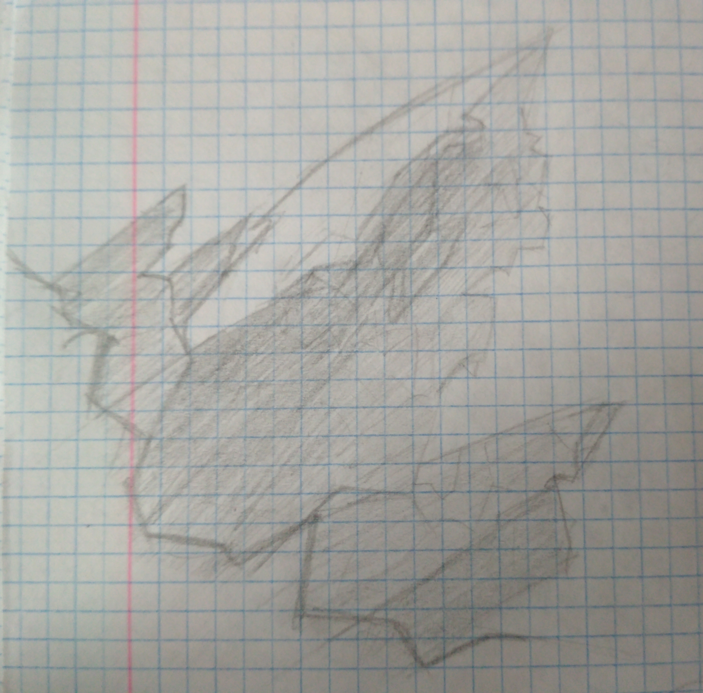
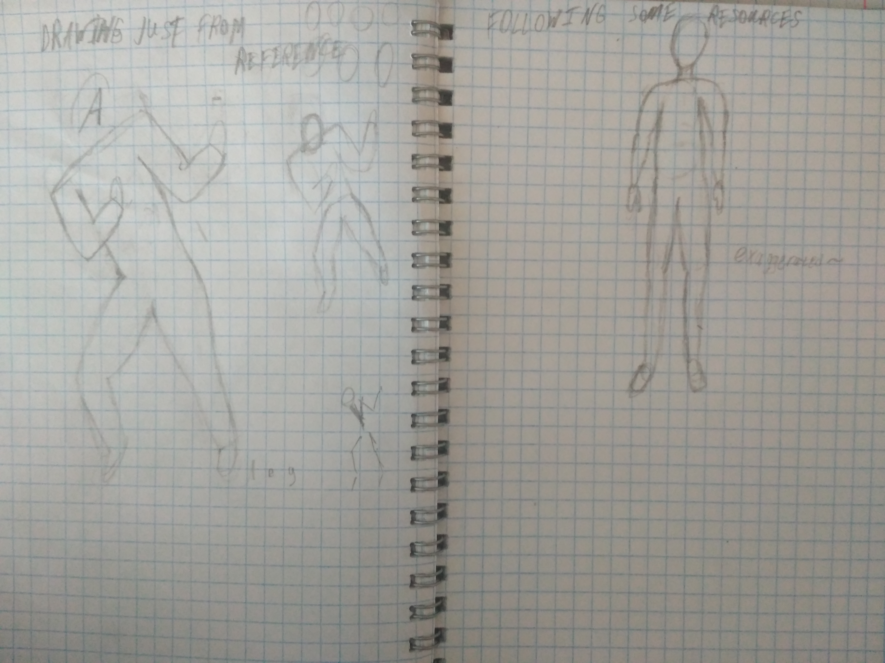

08/04/22long time no see
i've been very busy with life, for the past couple of months i've made some artwork, made some music, got a graphics tablet, made some digital artwork, made some games, wrote some code
here are some things i made when i got the tablet
i also made a few """EPs""": 1, 2, 3, and a single track made in FamiStudio
I plan on making more stuff like this, despite the tracks being amateur at best it still gives me experience
my friends and I have also made 2 games back in October and a few days ago: Rock'n'Rover and Hypercrastinate respectively (hypercrastinate's name might've been inspired by a certain game about a drifter in a world of hyper light)
I also updated the website a bit, the most notable change being the font changer on the home page (it needs javascript on every page where I want the font to change, which is not something I really want (I might change the font to not have javascript on every single page of this website))
it's been fun these past few months, I've had some ups and downs, it's both interesting and sad to see how much has changed in the world
Tea's also been making blogposts, they are pretty cool and inspiring
[END OF BIANNUAL LIFE UPDATE]


a lot
i'm pretty much done with this spaceship, i went for a lowpoly look but good lighting


3 for 1
3 for 1
just some 3d modeling


2 for 1
first of all, we took a 1 day break from challenges yesterday
second, here's bnl tower and e-wall for the last day of the drawing challenge
third, we're doing a 3d challenge and we're working on the same scene for 15 days, the base model is a spaceship


explosions
i was trying to make the first one out of straight lines and it looks like a very low poly model of an explosion and the second one looks like a tree
cool


building and fire
i forgot to update the blog yesterday so here are 2 themes for 1 post
the last drawing turned out pretty well imo


water
man water is difficult
rocks are difficult too

25/07/21skulls
i like the cartoonish style they have (they're from memory)

rock
rock
also whoops i didn't post anything yesterday so i drew bad kirby (not in the frame)
trees
both trees turned out alright, though maybe the bottom tree is a bit weird looking

clouds
top cloud - replicating a cloud from an image
bottom cloud - replicating only the outline and adding stylized things
pretty cool right

anatomy
this turned out pretty bad (at least the human on the right looks alright, the person on the left is terrible and doesn't even have a head)
cloth
no no no no no never

shading
thanks to tea suggesting it i did some shading and it turned out fine (the second drawing is a bit worse but still alright)

room
hi i'm writing this on the 18th bc i forgot to add this to the blog, i drew my room

WALL-E??
no way i drew wal-e (my very cool WALL-E oc)!!! but in all seriousness this actually turned out pretty well considering my skills

first post here
hi this is the first post of my blog and i drew twospaces it's pretty cool